Asset Master بيتابع كل حاجة الشركة تملكها — لابتوبات، موبايلات، شاشات، عربيات، عفش — وبيجاوبك في أي لحظة على 3 أسئلة: عندنا إيه؟ فين؟ ومع مين؟
| الفكرة | معناها |
|---|---|
| الأصل | حاجة واحدة الشركة تملكها (لابتوب واحد، عربية واحدة). كل أصل ليه رمز مميز زي LAP-00001. |
| التصنيف | نوع الأصل (حواسيب، عربيات...). التصنيف بيحدد أول الرمز (LAP)، والخانات الإضافية اللي بتتسجل (زي الرامات أو رقم اللوحة)، والعمر الإنتاجي لحساب الإهلاك. |
| الموظف | الشخص اللي ممكن يستلم عُهدة. الموظف مش محتاج يكون عنده حساب دخول. |
| المستخدم | الشخص اللي بيدخل على السيستم. اللي يقدر يعمله بيتحدد حسب دوره. |
| العُهدة (التسليم) | إنك تسلّم أصل لموظف. بتفضل مفتوحة لحد ما يرجّعه. كل تسليم واستلام ليه إيصال برقم. |
| الحالة | في المخزن متاح · مُسلَّم مع موظف · في الصيانة بيتصلح · مُستبعد خلاص مش مستخدم · مفقود ضايع. |
| الحالة الفنية | جديد، جيد، مقبول، ضعيف، تالف — بتتسجل مع كل تسليم واستلام. |
| سجل المراجعة | سجل دايم ما ينفعش يتلعب فيه، فيه كل عملية مهمة: مين عمل إيه وإمتى. |
تسجّله (في المخزن) ← تسلّمه لموظف (مُسلَّم، وتطبع إيصال التسليم ويتمضي) ← الموظف يرجّعه (إيصال استلام) ← يرجع في المخزن، أو في الصيانة لو محتاج تصليح، أو مُستبعد/مفقود في الآخر. كل خطوة بتتسجل في تاريخ الأصل.
افتح Chrome أو Edge وروح على العنوان اللي المسؤول هيديهولك، مثلاً http://localhost:5222 على السيرفر نفسه، أو https://assets.yourcompany.com للفريق كله.
لحد ما يبقى فيه ترخيص ساري، السيستم بيبقى مقفول: المدير الأعلى بس اللي يقدر يدخل، وصفحتين بس شغالين: الترخيص وحسابي.
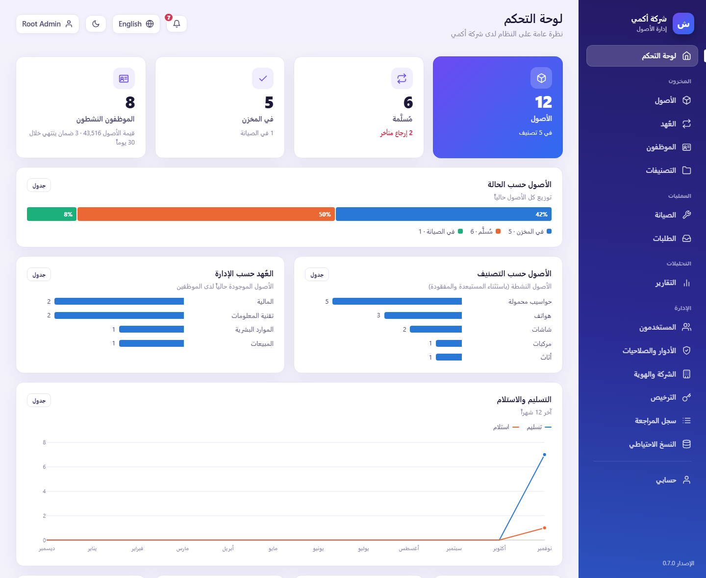
الصفحات متقسمة مجموعات، وانت بتشوف بس اللي دورك يسمح بيه.
| المجموعة | الصفحات |
|---|---|
| — | لوحة التحكم — النظرة العامة. |
| المخزون | الأصول، العُهد، الموظفون، التصنيفات |
| العمليات | الصيانة، الطلبات |
| التحليلات | التقارير |
| الإدارة | المستخدمون، الأدوار والصلاحيات، الشركة والهوية، الترخيص، سجل المراجعة، النسخ الاحتياطي |
| — | حسابي |
على الموبايل القائمة بتبقى مستخبية؛ دوس على زرار ☰ اللي فوق عشان تفتحها.
| الزرار | بيعمل إيه |
|---|---|
| زراير الصفحة | كل صفحة بتحط زرايرها الأساسية هنا (زي إضافة أصل أو تصدير إلى Excel). |
| الجرس 🔔 | بيفتح التنبيهات (تحت). الرقم الأحمر = عدد الحاجات اللي محتاجة انتباهك، وبينبض لو فيه حاجة خطيرة. |
| English / العربية | بيغيّر اللغة ليك انت بس، وبيفتكر اختيارك. |
| القمر / الشمس | بيبدّل بين الشكل الغامق والفاتح. |
| اسمك | بيفتح قائمة فيها حسابي وتسجيل الخروج. |
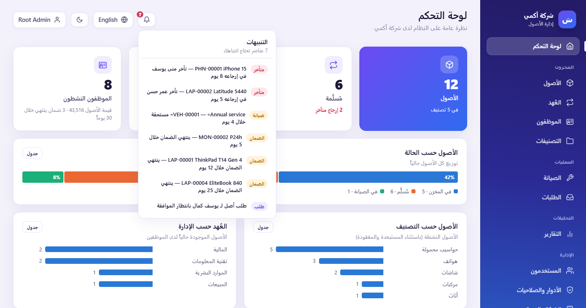
| التنبيه | معناه — ولما تدوس عليه يحصل إيه |
|---|---|
| متأخر | موظف لسه ماسك أصل بعد تاريخ الإرجاع المتوقع. بيفتح الأصل. |
| الضمان | ضمان هيخلص خلال عدد الأيام المحدد (افتراضي 30 يوم). بيفتح الأصل. |
| صيانة | صيانة مجدولة قرّب ميعادها، أو اتأخرت (بالأحمر). بيفتح صفحة الصيانة. |
| طلب | طلب أصل مستني موافقة (للي بيوافقوا بس). بيفتح الطلبات. |
| قرار | طلب انت عملته اتوافق عليه أو اترفض في آخر 7 أيام. بيفتح الطلبات. |
التنبيهات بتتحسب لحظياً وبتتحدث كل دقيقة. انت مش بتمسحها — هي بتختفي لوحدها لما سبب المشكلة يتحل (الأصل يرجع، تاريخ الضمان يتعدّل، الصيانة تبدأ...). وكل واحد بيشوف التنبيهات اللي دوره يسمح بيها بس. وممكن نفس القائمة توصلك على الإيميل كل يوم الصبح (فصل 19).
أول صفحة بتظهر بعد الدخول، وبتوريك حالة المخزون كله في نظرة واحدة.
| الكارت | بيوريك إيه |
|---|---|
| الأصول | عدد الأصول كلها وفي كام تصنيف. |
| مُسلَّمة | كام أصل مع الموظفين، وكام واحد متأخر في الإرجاع (بالأحمر). |
| في المخزن | كام واحد متاح، وكام واحد في الصيانة. |
| الموظفون النشطون | عدد الموظفين الشغالين، وقيمة الأصول (تكلفة الشراء للأصول اللي مش مستبعدة أو مفقودة)، والضمانات اللي قرّبت تخلص. |
| المستخدمين · الأدوار · الترخيص · آخر نسخة | معلومات السيستم: الحسابات، حالة الترخيص وميعاد انتهاءه، وإمتى اتعملت آخر نسخة احتياطية كاملة. |
عدّي بالماوس (أو المس) على أي شريط أو نقطة تشوف الأرقام بالظبط. وكل رسمة فيها زرار جدول بيعرض نفس الأرقام في جدول، وتدوس رسم ترجع للرسمة.
النشاط الأخير بيعرض آخر العمليات من سجل المراجعة (للي مسموحلهم يشوفوه بس). والبداية قائمة مهام لأي تركيبة جديدة — فعّل الترخيص، ارفع الشعار، ضيف المستخدمين، اعمل التصنيفات، ضيف الموظفين، سجّل أول أصل، اعمل نسخة احتياطية — وكل واحدة جنبها زرار فتح بيوديك على الصفحة الصح.
قائمة بكل حاجة الشركة تملكها.
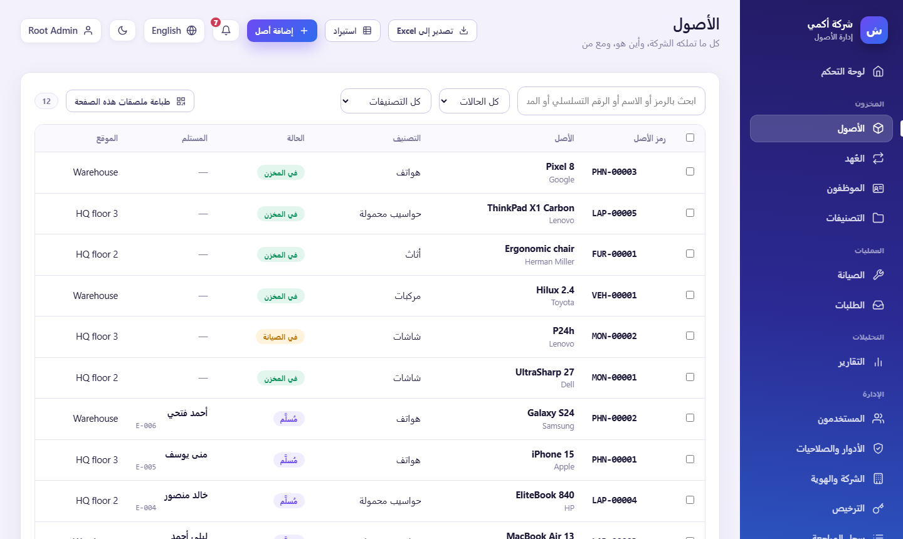
| الزرار / الأداة | بيعمل إيه |
|---|---|
| تصدير إلى Excel | بينزّل الأصول اللي ظاهرة حسب البحث والفلاتر في ملف Excel، ومعاها الحقول المخصصة والمستلم والحالة (فصل 15). |
| استيراد | بيضيف أو يعدّل أصول كتير مرة واحدة من ملف Excel (فصل 15). |
| إضافة أصل | بيفتح فورم تسجيل أصل جديد (تحت). |
| خانة البحث | بتدوّر بالرمز أو الاسم أو الرقم التسلسلي أو الماركة أو الموديل أو الموقع أو اسم/رقم الموظف اللي ماسكه. النتايج بتتغير وانت بتكتب. |
| كل الحالات | تعرض حالة واحدة بس (مثلاً المُسلَّم بس). |
| كل التصنيفات | تعرض تصنيف واحد بس. |
| مربعات الاختيار | تختار أصول عشان تطبع لها ملصقات QR. المربع اللي في العنوان بيختار الصفحة كلها، والاختيار بيفضل محفوظ لو قلّبت الصفحات. |
| طباعة ملصقات هذه الصفحة / طباعة N ملصق | بيفتح صفحة الملصقات للأصول اللي اخترتها — أو للصفحة كلها لو ما اخترتش حاجة (فصل 14). |
| الرقم | عدد الأصول اللي طالعة في البحث. |
| الأسهم تحت | الصفحة اللي بعدها / اللي قبلها (25 أصل في الصفحة). |
| لما تدوس على صف | بيفتح شباك تفاصيل الأصل (فصل 6). |
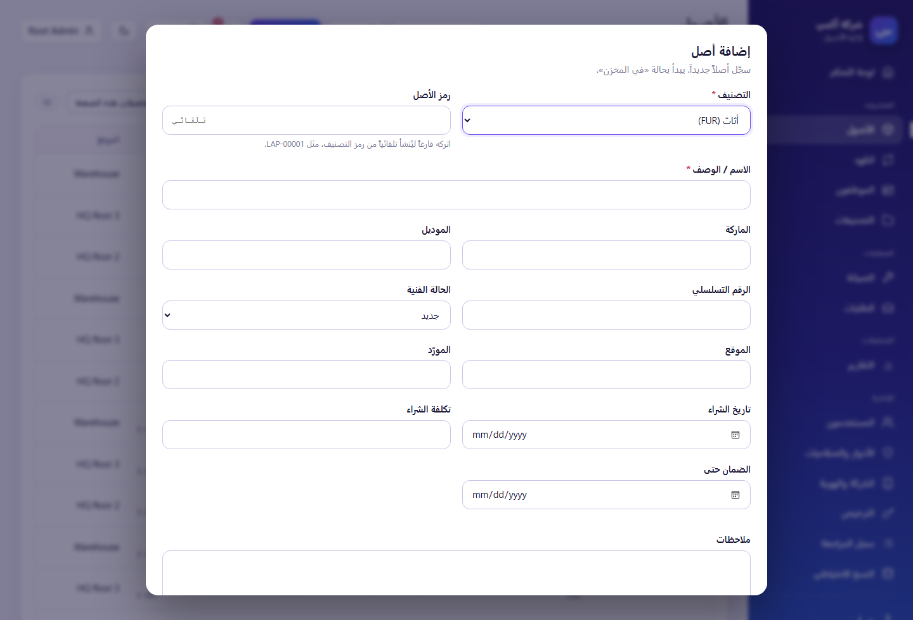
| الخانة | الشرح |
|---|---|
| التصنيف * | لازم. لما تغيّره بتظهر الحقول الإضافية بتاعته. |
| رمز الأصل | سيبه فاضي ياخد الرمز التلقائي اللي عليه الدور (زي LAP-00007)، أو اكتب رقم الاستيكر القديم بتاعك. لازم ما يتكررش. |
| الاسم / الوصف * | الحاجة دي إيه، مثلاً “ThinkPad T14 Gen 4”. |
| الماركة، الموديل | تفاصيل اختيارية. |
| الرقم التسلسلي | لازم ما يتكررش بين كل الأصول (السيستم بيرفض التكرار). |
| الحالة الفنية | جديد، جيد، مقبول، ضعيف، أو تالف. |
| الموقع، المورّد | متخزن فين، ومين باعه. |
| تاريخ الشراء، تكلفة الشراء | بيتستخدموا في تقارير القيمة والإهلاك. |
| الضمان حتى | بيعمل تنبيه قبل ما الضمان يخلص. |
| حقول التصنيف | الحقول الإضافية بتاعة التصنيف (رامات، رقم لوحة...). اللي عليها * لازم تتملي. |
| ملاحظات | كلام حر، كذا سطر. |
دوس حفظ. أي أصل جديد بيبدأ في المخزن، وهتظهرلك رسالة فيها الرمز اللي خده.
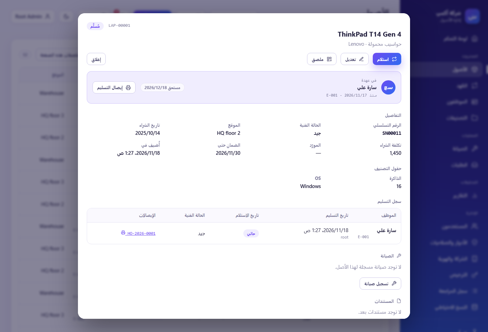
| الزرار | بيظهر إمتى — وبيعمل إيه |
|---|---|
| تسليم | لما الأصل يكون في المخزن بس. بتسلّمه لموظف (فصل 7). |
| استلام | لما الأصل يكون مُسلَّم بس. بترجّعه (فصل 7). |
| تعديل | تغيّر أي تفصيلة (الرمز، الرقم التسلسلي، التصنيف، الحقول...). كل تعديل بيتسجل في النشاط. |
| تغيير الحالة | مش متاح والأصل مُسلَّم. بينقل الأصل لـ في المخزن، في الصيانة، مُستبعد، أو مفقود، مع ذكر السبب. |
| ملصق | بيفتح ملصق QR جاهز للطباعة للأصل ده. |
| حذف | بس للأصول اللي عمرها ما اتسلمت (مثلاً اتعملت بالغلط). الأصل اللي ليه تاريخ بيتستبعد، عمره ما بيتمسح. |
| إغلاق | يقفل الشباك (أو دوس Esc). |
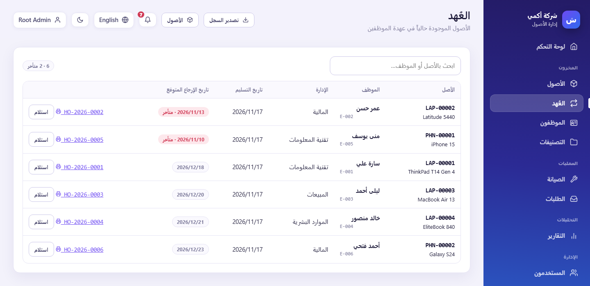
| الزرار / العمود | بيعمل إيه |
|---|---|
| البحث | بالرمز أو اسم الأصل أو اسم/رقم الموظف. |
| تصدير السجل | بينزّل تاريخ كل عمليات التسليم والاستلام في Excel. |
| الأصول | يوديك على صفحة الأصول. |
| تاريخ الإرجاع المتوقع | أحمر ومعاه متأخر لو اتأخر، والمتأخرين بيظهروا الأول. |
| لينك الإيصال (زي HO-2026-0003) | بيفتح إيصال التسليم. |
| استلام | تستلم الأصل من القائمة على طول. |
| لما تدوس على صف | بيفتح الأصل. |
كل تسليم بياخد رقم زي HO-2026-0001، وكل استلام رقم زي RT-2026-0001. الترقيم بيبدأ من الأول كل سنة، وعمر رقم ما بيتكرر.
دوس إيصال التسليم في شباك الأصل، أو أي رقم إيصال في سجل التسليم (شباك الأصل، شباك الموظف، صفحة العُهد). الإيصال بيفتح في تاب جديدة.
شعار واسم الشركة، عنوان الإيصال ورقمه، التاريخ والساعة، بيانات الموظف (الاسم، الرقم، الإدارة، الوظيفة)، بيانات الأصل (الرمز، الاسم، التصنيف، الماركة/الموديل، الرقم التسلسلي، الحقول المخصصة)، الحالة، تاريخ الإرجاع المتوقع أو تاريخ التسليم الأصلي، الملاحظات، نص الشروط (تقدر تغيّره — فصل 19)، وخانتين للإمضاء (الموظف، والمستخدم اللي سلّم أو استلم).
| الزرار | بيعمل إيه |
|---|---|
| طباعة / حفظ PDF | بيفتح شباك الطباعة. اختار الطابعة — أو اختار «حفظ بتنسيق PDF» كطابعة عشان يطلعلك ملف PDF. الصفحة متظبطة على مقاس A4. |
| العربية / English | يعرض الإيصال بالعربي أو بالإنجليزي، بغض النظر عن لغة السيستم عندك. |
| إرفاق النسخة الموقّعة | بعد ما الموظف يمضي، اعمل سكان أو صوّر الورقة وارفعها هنا. هيظهر لينك النسخة الموقّعة على الإيصال وفي مستندات الأصل. |
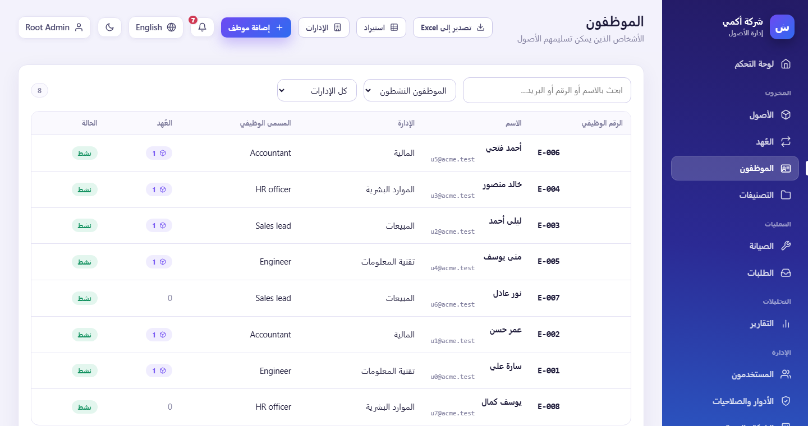
| الزرار / الأداة | بيعمل إيه |
|---|---|
| تصدير إلى Excel | بينزّل الموظفين اللي ظاهرين حسب الفلاتر. |
| استيراد | يضيف أو يعدّل موظفين كتير من Excel (فصل 15). |
| الإدارات | بيفتح قائمة الإدارات: تضيف (الاسم عربي/إنجليزي + إضافة)، تعدّل الاسم (القلم وبعدين حفظ)، أو تمسح (سلة الزبالة — بس للإدارة اللي ما فيهاش موظفين). |
| إضافة موظف | تسجّل موظف جديد. |
| البحث | بالاسم أو الرقم الوظيفي أو الإيميل أو المسمى الوظيفي. |
| فلتر الحالة | الموظفون النشطون (الافتراضي)، اللي سابوا الشركة، أو الجميع. |
| فلتر الإدارة | إدارة واحدة بس. |
| عمود العُهد | كام أصل مع الموظف دلوقتي. |
| لما تدوس على صف | بيفتح شباك تفاصيل الموظف. |
الرقم الوظيفي (لازم وما يتكررش)، الاسم الكامل عربي و/أو إنجليزي (واحد على الأقل)، الإدارة، المسمى الوظيفي، الحالة (نشط / غادر)، الإيميل، التليفون، ملاحظات.
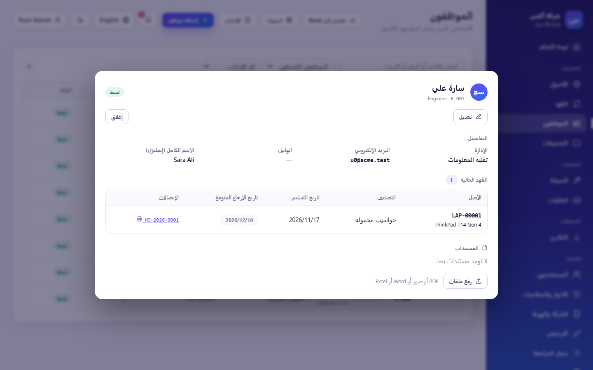
التصنيفات هي أنواع الأصول. اعملها قبل ما تضيف أصول.
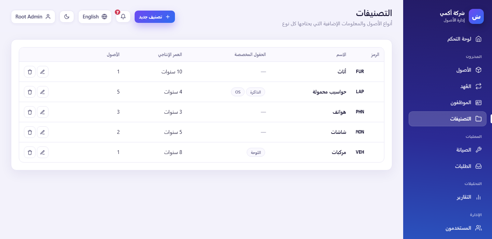
| الزرار | بيعمل إيه |
|---|---|
| تصنيف جديد | تعمل تصنيف. |
| القلم | تعدّل التصنيف وحقوله. |
| سلة الزبالة | تمسح التصنيف — بس لو ما فيهوش أصول. |
| الخانة | الشرح |
|---|---|
| الاسم (عربي / إنجليزي) | لغة واحدة على الأقل. |
| الرمز * | من 2 لـ 8 حروف إنجليزي أو أرقام، زي LAP. بيبقى أول الرمز التلقائي للأصول (LAP-00001). السيستم بيقترحه من الاسم الإنجليزي. لو غيّرته بعدين، بيأثر على الأصول الجديدة بس. |
| الوصف | اختياري. |
| العمر الإنتاجي (سنوات) | لحساب الإهلاك بطريقة القسط الثابت في تقرير القيمة. سيبه فاضي لو النوع ده مش بيتهالك (زي الأراضي). |
معلومات زيادة بتتسجل لأصول التصنيف ده. دوس إضافة حقل لكل واحد:
| الجزء | الشرح |
|---|---|
| العنوان (عربي / إنجليزي) | اسم الخانة، زي “الذاكرة” / “RAM (GB)”. |
| النوع | نص، رقم، تاريخ، قائمة اختيار (تختار من اختيارات)، أو نعم / لا. |
| الخيارات | لقائمة الاختيار بس: الاختيارات وبينهم فواصل، زي “Windows, macOS, Linux”. |
| إلزامي | أصول التصنيف ده ما تتحفظش من غير الخانة دي. |
| سلة الزبالة | تشيل الحقل. (القيم اللي اتسجلت قبل كده بتفضل محفوظة بس ما بتظهرش.) |
سجل للإصلاحات والخدمات الدورية والفحوصات والترقيات — بالمورّد والتكلفة والنتيجة — ومعاه صيانة مجدولة بتفكّرك قبل ميعادها.
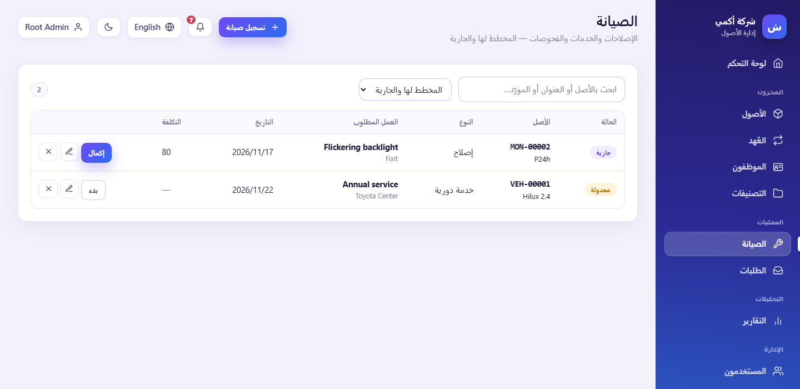
مجدولة ليها ميعاد · متأخرة الميعاد عدّى · جارية الشغل بدأ · مكتملة · ملغاة.
| الزرار / الأداة | بيعمل إيه |
|---|---|
| تسجيل صيانة | تسجّل شغل جديد (موجود كمان جوه شباك كل أصل). |
| البحث | برمز/اسم الأصل أو العنوان أو المورّد. |
| الفلتر | المخطط لها والجارية (الافتراضي)، مجدولة، جارية، مكتملة، ملغاة، الكل. |
| بدء | للشغل المجدول: يبدأه دلوقتي (وممكن يوقف الأصل عن الخدمة). |
| إكمال | للشغل الجاري: تكتب التكلفة النهائية والنتيجة — ولو الأصل كان متوقف عن الخدمة، حالته بعد الشغل. |
| القلم | تعدّل السجل. |
| ✕ | تلغي الشغل. |
| لما تدوس على صف | بيفتح الأصل. |
إجمالي تكلفة الصيانة بيظهر في تقرير الصيانة والتكاليف.
نظام موافقة بسيط: حد يطلب أصل لموظف، وحد تاني يوافق أو يرفض. المثال المعتاد: الـ HR يطلب لابتوب لموظف جديد، ومسؤول الأصول يوافق ويسلّم في خطوة واحدة.
| الزرار | مين — وبيعمل إيه |
|---|---|
| بانتظار الموافقة / تمت الموافقة / مرفوض / الكل | بيبدّل القائمة. |
| طلب جديد | اللي بيطلب: يختار الموظف، والتصنيف (أو «أي تصنيف»)، وتاريخ مطلوب قبل، والسبب (لازم)، وبعدين إرسال الطلب. |
| موافقة | اللي بيوافق: بيوريه الأصول اللي في المخزن من التصنيف المطلوب. يختار واحد، وممكن يحط تاريخ إرجاع وملاحظة، وبعدين موافقة وتسليم. الأصل بيتسلّم للموظف فوراً (بإيصال تسليم) والطلب بيبقى «تمت الموافقة». |
| رفض | اللي بيوافق: لازم يكتب سبب، وصاحب الطلب بيشوفه. |
| ✕ (إلغاء الطلب) | صاحب الطلب (لطلباته اللي لسه مستنية) أو اللي بيوافق. |
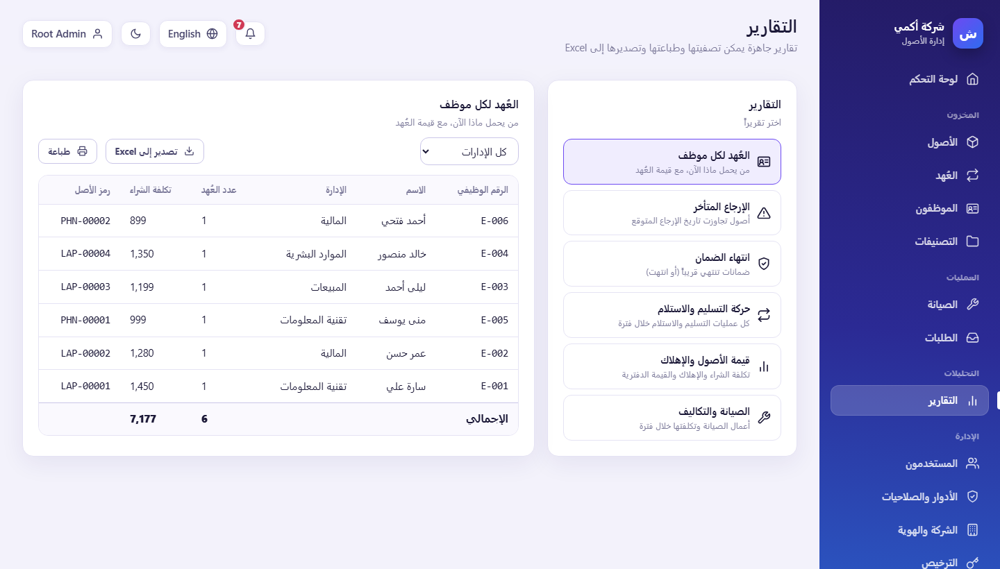
| التقرير | بيجاوب على إيه — والفلاتر |
|---|---|
| العُهد لكل موظف | مين ماسك إيه دلوقتي، كام حاجة، وقيمتهم. فلتر: الإدارة. |
| الإرجاع المتأخر | الأصول اللي عدّت تاريخ الإرجاع، وكام يوم متأخرة. |
| انتهاء الضمان | الضمانات اللي هتخلص خلال 30/60/90/180/365 يوم؛ علّم على تضمين المنتهية عشان تشوف اللي خلصت كمان. |
| حركة التسليم والاستلام | كل تسليم واستلام في فترة: آخر 7/30/90 يوم، الشهر ده، السنة دي، أو فترة تختارها. |
| قيمة الأصول والإهلاك | تكلفة الشراء، الإهلاك المتراكم، والقيمة الدفترية، ملخص لكل تصنيف وبعدين لكل أصل. الفلاتر: التصنيف، تضمين المستبعدة والمفقودة. |
| الصيانة والتكاليف | أعمال الصيانة وتكلفتها في فترة. الفلاتر: الحالة والفترة. |
| الزرار | بيعمل إيه |
|---|---|
| تصدير إلى Excel | بينزّل التقرير بنفس الفلاتر، دايماً بكل الصفوف ومعاه صف الإجمالي. |
| طباعة | يطبع التقرير لوحده (القائمة والزراير بتستخبى). اختار «حفظ بتنسيق PDF» لو عايز PDF. |
| لما تدوس على صف | بيفتح الأصل ده. |
على الشاشة التقرير بيعرض لحد 2,000 صف بس (ومعاه تنبيه)؛ الإجماليات دايماً محسوبة على كله، وملف Excel فيه كل الصفوف.
كل أصل ممكن يبقى له استيكر مطبوع عليه كود QR. لما تمسحه بكاميرا الموبايل، بيفتح الأصل ده في السيستم.
افتح كاميرا الموبايل ووجّهها على الملصق، ودوس على اللينك اللي يظهر. السيستم هيفتح (سجّل دخول لو محتاج) ويعرض شباك الأصل على طول. ولو الرمز مش موجود خلاص، هتظهر رسالة بكده.
| الموضوع | التفاصيل |
|---|---|
| أعمدة الموظفين | emp_no* · full_name_en · full_name_ar · department · job_title · email · phone · status (active/left) · notes. الإدارات اللي مش موجودة بتتعمل لوحدها. |
| أعمدة الأصول | category_code* · tag · name* · brand · model · serial_no · condition · location · purchase_date · purchase_cost · supplier · warranty_until · notes · assigned_to · وعمود لكل حقل مخصص (زي ram_gb). |
| assigned_to | رقم وظيفي: الأصل الجديد بيتسلّم للموظف ده على طول (بإيصال). ممتاز عشان تدخّل الوضع الحالي أول يوم. |
| تحديث الموجود | علّم على «تحديث ... الموجودين مسبقاً» عشان تعدّل السجلات اللي موجودة (المطابقة بالرقم الوظيفي / رمز الأصل). الأعمدة اللي في الملف بس هي اللي بتتغير. |
| القيم المقبولة | التواريخ زي 2026-03-31 أو 31/03/2026 أو تاريخ Excel عادي. الحالات بالعربي أو الإنجليزي (جيد / good). الأرقام زي 1,200.50. الملفات: .xlsx أو .csv. |
| الحدود | لحد 5,000 صف في الملف. |
تصدير إلى Excel في الأصول والموظفين والتقارير، وتصدير السجل في العُهد. الملفات بتفتح في Excel والشيت من اليمين للشمال لو انت شغال عربي. والتصدير بيستخدم نفس أسامي أعمدة النموذج — يعني تقدر تصدّر، تعدّل في Excel، وترجّعه استيراد بـ «تحديث الموجود».
الأصول والموظفين ليهم جزء المستندات: فواتير، كروت ضمان، صور، عقود، صور بطايق. والإيصالات الموقّعة بتترفق على الإيصال (فصل 8) وبتظهر في نشاط الأصل.
| الزرار | بيعمل إيه |
|---|---|
| رفع ملفات | اختار ملف أو أكتر. المسموح: PDF، صور (PNG, JPG, WebP, GIF)، Word و Excel، لحد 25 ميجا للملف. |
| اسم الملف | بيفتح الملف في تاب جديدة (PDF والصور) أو بينزّله. |
| سهم التنزيل | بينزّل على طول. |
| سلة الزبالة | تمسح الملف (بيسألك الأول، وبيتسجل في سجل المراجعة). |
للأمان، السيستم بيفحص محتوى الملف الحقيقي مش اسمه بس — يعني برنامج أو صفحة ويب متغيّر اسمها بتترفض. ومين يشوف أو يضيف مستندات بيمشي حسب السجل: أي حد يشوف الأصول يقدر يفتح مستنداتها، والإضافة محتاجة صلاحية التعديل.
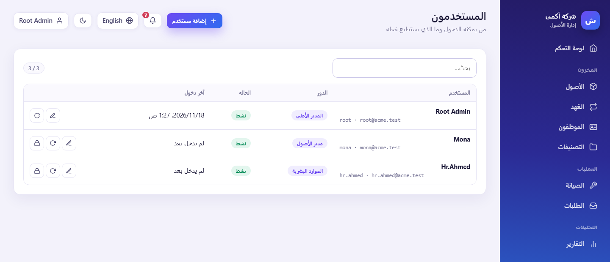
| الزرار | بيعمل إيه |
|---|---|
| إضافة مستخدم | اسم المستخدم، الاسم الكامل، الإيميل، الدور، وباسورد مؤقت اختياري (سيبه فاضي والسيستم يعمل واحد قوي). الباسورد المؤقت بيظهر مرة واحدة بس — اديه للشخص بشكل خاص، ولازم يغيّره أول ما يدخل. |
| القلم | تغيّر الاسم أو الإيميل أو الدور. |
| السهم الدايري (إعادة تعيين كلمة المرور) | يعمل باسورد مؤقت جديد ويخرّج المستخدم من كل الأجهزة. |
| القفل / علامة صح (تعطيل / تفعيل الحساب) | التعطيل بيخرّج المستخدم فوراً ويمنعه يدخل؛ الحساب وتاريخه بيفضلوا. ما تقدرش تعطّل نفسك. |
| البحث | باسم المستخدم أو الاسم أو الإيميل. |
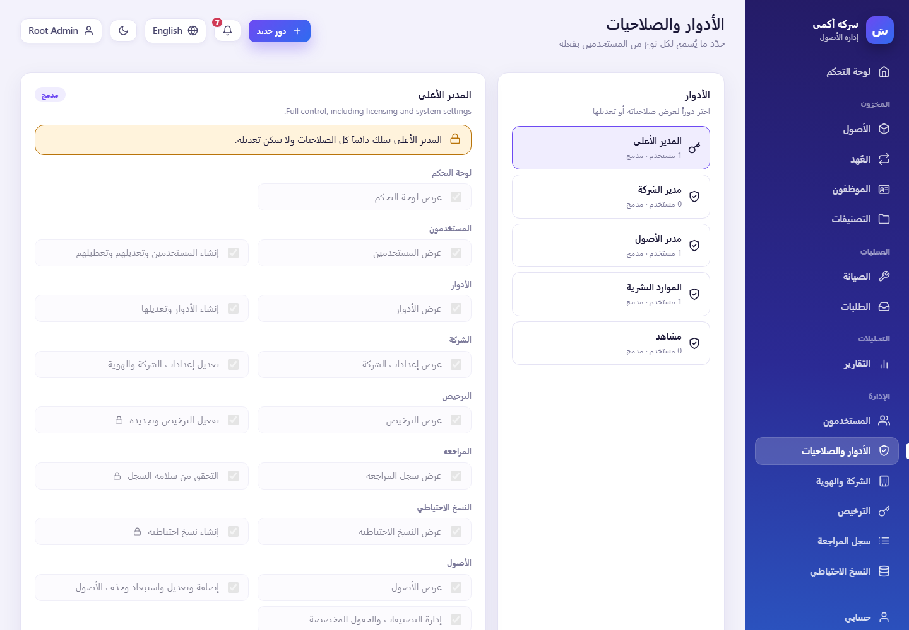
| يقدر... | المدير الأعلى | مدير الشركة | مدير الأصول | HR | مشاهد |
|---|---|---|---|---|---|
| يشوف لوحة التحكم والأصول والتقارير | ✓ | ✓ | ✓ | ✓ | ✓ |
| يضيف / يعدّل / يستبعد أصول وتصنيفات | ✓ | ✓ | ✓ | — | — |
| يسلّم ويستلم أصول | ✓ | ✓ | ✓ | — | — |
| يشوف الموظفين | ✓ | ✓ | ✓ | ✓ | ✓ |
| يضيف / يعدّل موظفين وإدارات | ✓ | ✓ | — | ✓ | — |
| يشوف الصيانة | ✓ | ✓ | ✓ | — | ✓ |
| يسجّل ويقفل صيانة | ✓ | ✓ | ✓ | — | — |
| يطلب أصول | ✓ | ✓ | ✓ | ✓ | — |
| يوافق على الطلبات | ✓ | ✓ | ✓ | — | — |
| يدير المستخدمين والأدوار وإعدادات الشركة | ✓ | ✓ | — | — | — |
| يشوف الترخيص وسجل المراجعة والنسخ | ✓ | ✓ | — | — | — |
| يفعّل الترخيص، يعمل/ينزّل نسخ، يتحقق من سجل المراجعة | ✓ | — | — | — | — |
| الصلاحية | بتسمح بإيه |
|---|---|
| عرض لوحة التحكم | صفحة لوحة التحكم. |
| عرض / إنشاء وتعديل وتعطيل المستخدمين | صفحة المستخدمين / التعديل فيهم. |
| عرض / إنشاء وتعديل الأدوار | صفحة الأدوار / التعديل فيها. |
| عرض / تعديل إعدادات الشركة والهوية | صفحة الشركة، وإعدادات التنبيهات والبريد. |
| عرض / تفعيل وتجديد الترخيص 🔒 | صفحة الترخيص / تركيب التراخيص. |
| عرض سجل المراجعة / التحقق من سلامته 🔒 | صفحة السجل / فحص السلامة. |
| عرض النسخ / إنشاء النسخ 🔒 | صفحة النسخ وسلامة النظام / عمل وفحص وتنزيل النسخ. |
| عرض الأصول | الأصول، العُهد، تفاصيل الأصل، المستندات، الرسومات، الإيصالات. |
| إضافة وتعديل واستبعاد وحذف الأصول | تعديل الأصول، تغيير الحالة، استيراد الأصول، مستندات الأصول. |
| إدارة التصنيفات والحقول المخصصة | صفحة التصنيفات. |
| تسليم واستلام الأصول | التسليم / الاستلام، ورفع الإيصال الموقّع. |
| عرض الموظفين / إضافة وتعديل الموظفين والإدارات | صفحة الموظفين / التعديل، والاستيراد، ومستندات الموظفين. |
| عرض التقارير وقيم الأصول | صفحة التقارير. |
| عرض الصيانة / تسجيل وإغلاق الصيانة | صفحة الصيانة / التعديل فيها. |
| طلب أصول للموظفين / الموافقة على الطلبات | صفحة الطلبات: عمل طلب / الموافقة والرفض. |
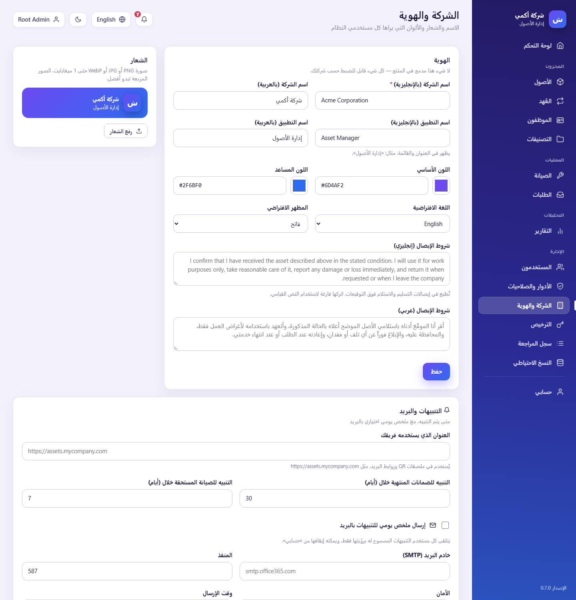
| الخانة / الزرار | بيعمل إيه |
|---|---|
| اسم الشركة (عربي / إنجليزي) | بيظهر في القائمة وصفحة الدخول والإيصالات والملصقات والإيميلات. |
| اسم التطبيق (عربي / إنجليزي) | اسم السيستم اللي بيظهر تحت اسم الشركة، زي «إدارة الأصول». |
| اللون الأساسي / الثانوي | ألوان الهوية (الزراير، القائمة، التدرجات). اختارها من مربع الألوان أو اكتب كود زي #6D4AF2. |
| اللغة / الشكل الافتراضي | اللي المستخدمين الجداد وصفحة الدخول بيبدأوا بيه. |
| شروط الإيصال (عربي / إنجليزي) | النص اللي بيتطبع فوق الإمضاءات في إيصالات التسليم والاستلام. لو فاضي = النص القياسي. |
| حفظ | يحفظ بيانات الهوية. |
| رفع الشعار / إزالة | PNG أو JPG أو WebP لحد 1 ميجا؛ الصور المربعة شكلها أحلى. |
| الخانة / الزرار | بيعمل إيه |
|---|---|
| العنوان الذي يستخدمه فريقك | عنوان السيستم الحقيقي على النت. بيتستخدم في ملصقات QR ولينكات الإيميل. |
| التنبيه للضمانات المنتهية خلال (أيام) | الافتراضي 30. |
| التنبيه للصيانة المستحقة خلال (أيام) | الافتراضي 7. |
| إرسال ملخص يومي للتنبيهات بالبريد | بيشغّل إيميل الصبح. كل مستخدم بياخد التنبيهات اللي دوره يسمح بيها بس، وفي الأيام اللي فيها حاجة بس. |
| خادم البريد (SMTP)، المنفذ، الأمان | سيرفر الإيميل بتاع شركتك، زي smtp.office365.com، منفذ 587، STARTTLS. (SSL/TLS على منفذ 465؛ و«بدون» للسيرفرات الداخلية بس.) |
| وقت الإرسال | الساعة اللي الإيميل اليومي بيتبعت فيها (بتوقيت السيرفر). |
| اسم المستخدم، كلمة المرور | بيانات دخول الإيميل. الباسورد بيتحفظ متشفّر وعمره ما بيظهر تاني؛ سيبه فاضي عشان يفضل المحفوظ. |
| عنوان المرسل | زي assets@yourcompany.com. |
| إرسال بريد تجريبي لي | يحفظ ويبعت رسالة تجريبية على إيميلك. |
| إرسال ملخص اليوم الآن | يبعت الإيميل اليومي حالاً لكل المشتركين. |
| الجزء / الزرار | بيعمل إيه |
|---|---|
| الحالة | نشط، فترة سماح (خلص بس لسه شغال كام يوم — جدّد حالاً)، منتهي، غير مفعّل، ملغي، سيرفر غلط، مشكلة في الساعة. |
| التفاصيل | مرخّص لمين، الإصدار، تاريخ الإصدار، تاريخ الانتهاء (والأيام الباقية)، المستخدمين النشطين / المسموح، المميزات، رقم الترخيص، تاريخ التفعيل. |
| رمز طلب التفعيل + نسخ | ابعته للمورد عشان تاخد ترخيص للسيرفر ده. ومعرّف التركيب بيعرّف التركيبة دي بالذات. |
| تفعيل الترخيص / اختيار ملف | يركّب ترخيص جديد أو متجدد (الصق النص أو اختار الملف). |
| خيارات متقدمة | تركيب قائمة إلغاء من المورد (نادراً ما بتحتاجها). |
| سجل الترخيص | كل تفعيل وتجديد وتغيير في الحالة. |
سجل دايم للعمليات المهمة: تسجيل الدخول (والمحاولات الفاشلة)، وكل تغيير في الأصول والموظفين والتصنيفات والمستخدمين والأدوار والإعدادات والتراخيص والنسخ والاستيراد والمستندات والصيانة والطلبات. ما ينفعش أي سطر فيه يتعدّل أو يتمسح.
| الأداة | بتعمل إيه |
|---|---|
| البحث | بيدوّر جوه التفاصيل. |
| المستخدم | اسم مستخدم واحد بس. |
| العملية تبدأ بـ... | زي asset. لكل عمليات الأصول، وauth. لتسجيل الدخول. |
| الأسهم | صفحات كل واحدة 25 سطر. |
| التحقق من السلامة | (المدير الأعلى) بيفحص السلسلة كلها. كل سطر فيه بصمة من السطر اللي قبله، فلو حد لعب في قاعدة البيانات من بره، الفحص بيقولك أول سطر اتغيّر. |
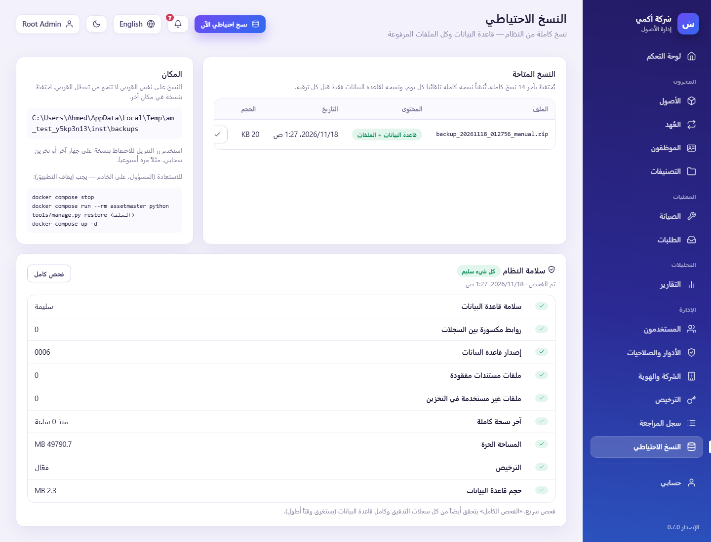
النسخة الكاملة ملف واحد فيه قاعدة البيانات وكل الملفات المرفوعة (المستندات، الإيصالات الموقّعة، الشعار)، ومعاها بصمة لكل ملف. فيه واحدة بتتعمل أوتوماتيك كل يوم، وبيتحفظ آخر 14 نسخة. وكمان بتتعمل نسخة لقاعدة البيانات بس أوتوماتيك قبل أي ترقية.
| الزرار | بيعمل إيه |
|---|---|
| نسخ احتياطي الآن | يعمل نسخة كاملة حالاً. |
| تحقق | يفحص كل ملف في النسخة وسلامة قاعدة البيانات. يقولك «النسخة سليمة» — أو «النسخة تالفة — لا تعتمد عليها». |
| سهم التنزيل | (المدير الأعلى) ينزّل النسخة عشان تحتفظ بيها على جهاز تاني أو على الكلاود. |
الاسترجاع بيتعمل على السيرفر عن طريق المسؤول والسيستم مقفول (الأوامر مكتوبة في الصفحة وفي فصل 26). الوضع الحالي بيتحفظ أوتوماتيك الأول كنسخة «before-restore»، والنسخة التالفة عمرها ما بتترجع.
| الفحص | معناه |
|---|---|
| سلامة قاعدة البيانات، الروابط المكسورة | ملف قاعدة البيانات سليم. |
| إصدار قاعدة البيانات | كل الترقيات اتطبقت. |
| سجل التدقيق (كشف التلاعب) | في فحص كامل بس: كل سطر في السجل بيتراجع. |
| ملفات مستندات مفقودة / ملفات مش مستخدمة | ملفات اترفعت واتمسحت من السيرفر / ملفات زيادة. |
| آخر نسخة كاملة | تحذير لو أقدم من 36 ساعة. |
| المساحة الفاضية، الترخيص، حجم قاعدة البيانات | تحذير لو المساحة أقل من 1 جيجا؛ وحالة الترخيص. |
كل سطر فيه مشكلة بيقولك تعمل إيه. وفحص كامل بيعمل كل حاجة ومعاها سلسلة سجل المراجعة (بياخد وقت أكتر شوية).
القواعد دي بتحمي سجلاتك. لما حاجة تترفض، الرسالة بتقولك ليه.
| الرسالة (باختصار) | ليه — وتعمل إيه |
|---|---|
| مُسلَّم بالفعل | الأصل ما ينفعش يبقى مع أكتر من شخص. استلمه الأول. |
| يمكن تسليم الأصول الموجودة في المخزن فقط | هو في الصيانة أو مستبعد أو مفقود. غيّر حالته الأول. |
| استلم الأصل قبل تغيير حالته | حالة الأصل المُسلَّم بتتغير عن طريق الاستلام بس. |
| له سجل تسليم ولا يمكن حذفه | استبعده بدل ما تمسحه — التاريخ عمره ما بيتمسح. |
| ما زال لدى الموظف عُهد | استلمها منه قبل ما تعلّمه إنه غادر. |
| للموظف سجل عُهد | علّمه «غادر» بدل الحذف. |
| التصنيف / الإدارة مستخدمة | انقل أو شيل الأصول / الموظفين اللي فيها الأول. |
| الرمز / الرقم التسلسلي / الرقم الوظيفي مستخدم | دول لازم ما يتكرروش. |
| لا يمكن أن يكون التاريخ في الماضي | تاريخ الإرجاع المتوقع لازم يكون النهارده أو بعده. |
| اختر أصلاً من التصنيف المطلوب | وانت بتوافق على طلب. |
| الترخيص لا يسمح بمستخدمين نشطين أكثر | عطّل حساب مش مستخدم أو هات ترخيص أكبر. |
| لا يمكنك منح صلاحية لا تملكها | اطلب من مدير أعلى منك. |
| نوع الملف غير مسموح | استخدم PDF أو صور أو Word أو Excel. |
| أعمدة إلزامية مفقودة (استيراد) | استخدم أسامي أعمدة النموذج في الصف الأول. |
| يلزم ترخيص ساري / النظام مقفول | المدير الأعلى لازم يفعّل أو يجدد الترخيص. |
| فشل التحقق الأمني. أعد تحميل الصفحة. | الصفحة فضلت مفتوحة كتير؛ دوس F5. |
cd D:\nproject\AssetMaster # the folder that contains docker-compose.yml docker compose up -d --build # start / upgrade docker compose logs assetmaster # setup code, errors docker compose stop # stop
كل بيانات الشركة جوه الـ Docker volume اسمه am_data: قاعدة البيانات، الملفات المرفوعة، النسخ، والمفاتيح. إوعى تشغّل docker compose down -v — الـ -v بتمسح البيانات. وحط المنطقة الزمنية بتاعة الشركة في ملف .env جنب docker-compose.yml، زي TZ=Africa/Cairo.
docker compose exec assetmaster python tools/manage.py info # version, users, licence docker compose exec assetmaster python tools/manage.py backup # full backup now docker compose exec assetmaster python tools/manage.py verify <file> # check a backup docker compose exec assetmaster python tools/manage.py check # system health docker compose exec assetmaster python tools/manage.py reset-password <username> docker compose exec assetmaster python tools/manage.py request-code # licence request code # restore (app stopped): docker compose stop docker compose run --rm assetmaster python tools/manage.py restore backup_YYYYMMDD_HHMMSS_auto.zip docker compose up -d
python tools\license_tool.py issue --private vendor_keys\vendor_private.pem --request "<request code>" --days 365 --max-users 10 --out customer.lic
تخزين متشفّر للباسوردات، جلسات بتنتهي لوحدها، حماية من الهجمات بين المواقع، قفل الحساب بعد محاولات غلط، صلاحيات بتتراجع مع كل طلب، سجل مراجعة يكشف التلاعب، فحص للملفات المرفوعة، باسورد الإيميل متشفّر، والكونتينر للقراءة بس. لو هتستخدمه على شبكة، حطه ورا HTTPS (شوف docs/DEPLOY_DOCKER.md).
| المصطلح | معناه |
|---|---|
| رمز الأصل | الكود المميز للأصل (LAP-00001) اللي بيتطبع على الملصق. |
| العُهدة / التسليم | أصل متسلّم لموظف لحد ما يرجّعه. |
| إيصال التسليم (HO) | الورقة الممضية وقت التسليم. |
| إيصال الاستلام (RT) | الورقة الممضية وقت الاستلام. |
| متأخر | ما رجعش لحد تاريخ الإرجاع المتوقع. |
| القيمة الدفترية | التكلفة ناقص الإهلاك — قيمة الأصل على الورق النهارده. |
| العمر الإنتاجي | عدد السنين اللي نوع الأصل بيتهالك عليها. |
| متوقف عن الخدمة | مش متاح مؤقتاً عشان الصيانة. |
| المدير الأعلى | الدور اللي عنده كل الصلاحيات؛ الوحيد اللي بيدير الترخيص والنسخ. |
| معرّف التركيب | هوية التركيبة الواحدة؛ الترخيص مربوط بيه. |
| النسخة الكاملة | ملف واحد فيه قاعدة البيانات وكل الملفات المرفوعة. |
| سجل المراجعة | السجل الدايم اللي بيكشف أي تلاعب في العمليات. |
Asset Master 0.8.0 — الدليل ده بيوصف الأدوار والإعدادات الافتراضية؛ ممكن المسؤول عندكم يكون غيّر الأدوار أو الأسامي أو الألوان حسب الشركة.